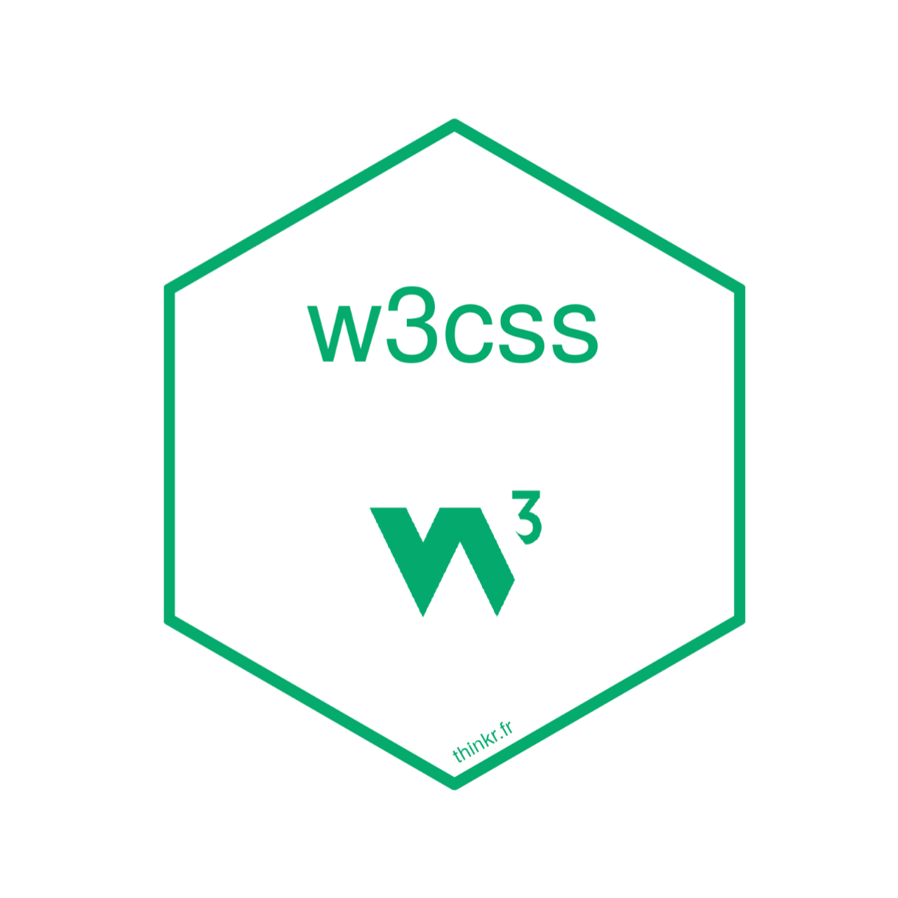
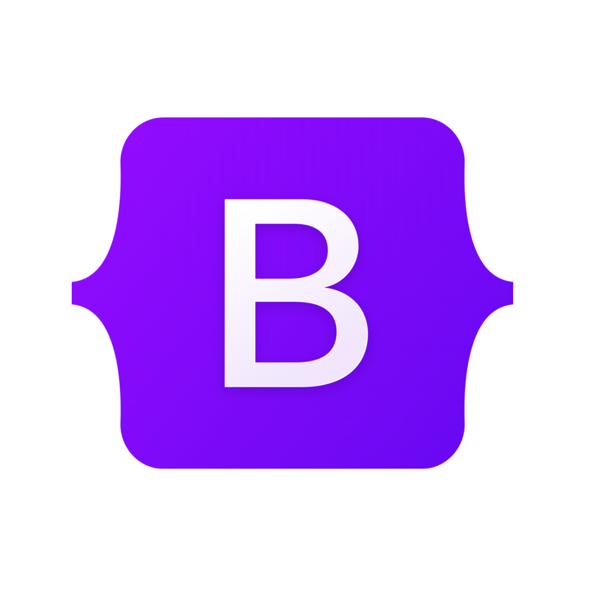
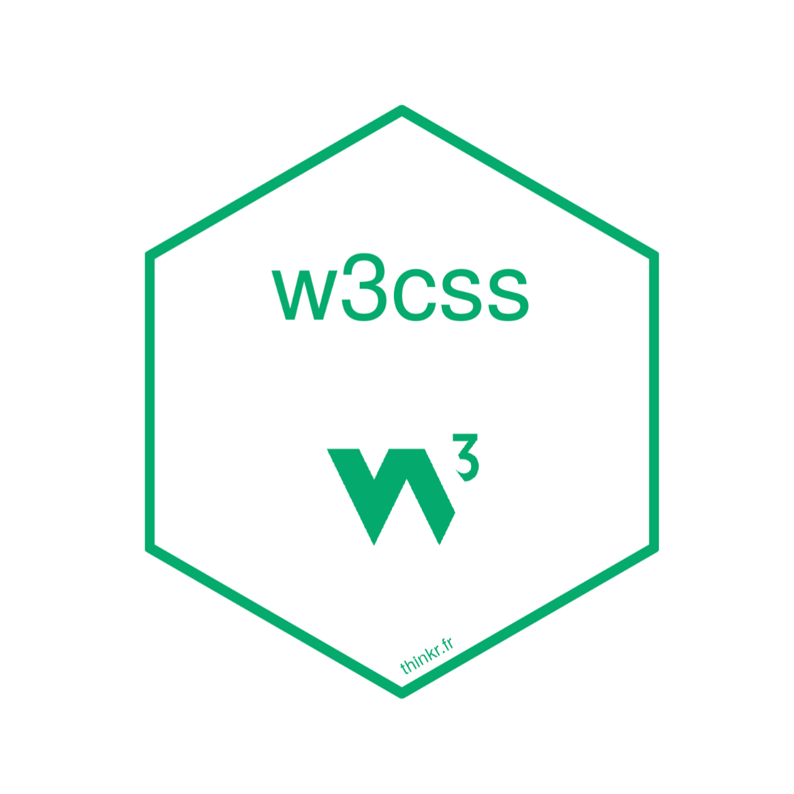
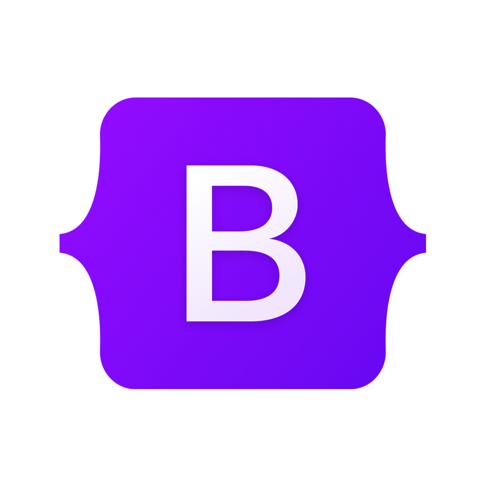

Muhammad Ibnu Rojab laki-laki yang akrab dipanggil Ibnu/Benu lahir tepat 61 tahun setelah kota Hiroshima dibom atom oleh Amerika. Ibnu sangan hobi bermain game online dari masing-masing genre yang berbeda-beda, untuk game yang paling disukainya adalah game yang bergenre MOBA seperti Mobile Legend, sedangkan untuk yang bergenre Battle-royale yaitu Blood Strike. Namun dibalik hobinya sebagai gamer, Ibnu juga memiliki hobi yang tidak kalah menarik yaitu Coding. Ibnu menjadikan keduanya sebagai hobi karena Ibnu ingin menjadi seorang Game Developer di masa depan, sekaligus kedua hobinya tersebut juga dapat menemaninya ketika sedang merasa sendiri.
Ibnu lahir di kota Lamongan yang tak lama setelah kelahirannya dia dibawa dan di besarkan di kota Tangerang. Pada tahun 2010 Ibnu mengawali pendidikannya di TK-RA Al-Ikhwan di usianya yang masih 4 tahun. Yang menjadi spesial-nya Ibnu saat itu adalah dia sudah bisa membaca dan menulis dari sebelum dia masuk TK. Setelah 2 tahun di TK, Ibnu melanjutkan studi di SDN Talagasari 1 Balaraja. Memang tidak ada prestasi yang didapatkan, tetapi Ibnu pernah 2x menjadi perwakilan lomba cerdas cermat PAI. Semua itu karena Ibnu sudah mendapatkan bekal pendidikan agama sejak kecil dari orang tuanya.
Enam tahun berlalu dan Ibnu harus ikut kedua orang tuanya pindah ke kampung halamannya di Lamongan untuk melanjutkan sekolahnya di MTs. Darul Hikam, meninggalkan teman-teman dan lingkungan yang jauh dari perkotaan. Dan di saat itulah kebodohan dan sifat malas menyerang. Bayangkan saja siswa yang selalu masuk 5 besar di kelasnya, kini menjadi seorang yang memiliki sifat pemalas karena terpengaruh oleh teman di sekitarnya. Namun mulai dari MTs. Ibnu mengekan teknologi digital karena adanya mata pelajaran TIK, sejak saat itu mulai tertarik dengan yang namanya teknologi.
Karena ketertarikannya dengan teknologi, setelah lulus akhirnya dia melanjutkan study di MA Matholi'ul Anwar dan mengambil jurusan MIPA-TI. Hehehe.... sebenarnya Ibnu ambil jurusan MIPA-TI bukan karena kemauannya, tetapi karena ikut-ikut temannya saja, tapi anehnya Ibnu justru yang malah terpilih sedangkan temannya tidak. Awal-awal memang Ibnu hanya belajar tentang Microsoft Office, tetapi ada di suatu waktu Ibnu mengikuti Mawar.Dev, yaitu ekstrakurukuler yang mengajarkan web development. Ibnu belajar selama 1 tahun, yahhh.... walaupun hanya sampai HTML dan CSS. Tiba di semester terkhir Ibnu pun mulai mempersiapkan kelulusannya sembari memilih kampus impiannya untuk SNBP, namun tak lama selang waktu itu kabar menyedihkan tiba, yaitu Ibnu tidak memenuhi kriteria siswa eligible. Impiannya untuk menjadi Front-End Developer seakan sirna. Akhirnya Ibnu mengambil jalan ninja dengan ikut jalur SPAN-PTKIN di UINSATU Tulungagung program studi Kumunikasi dan Penyiaran Islam. Dengan jiwa pantang menyerahnya Ibnu tetap melanjutkan belajar coding walaupun dengan jalur otodidak.

 


